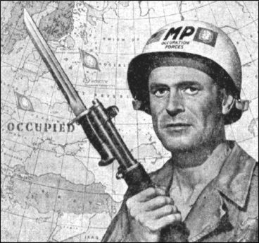

Nylig var det storoppslag i norske aviser og fjernsynsnyheter om at Sovjet på syttitallet overveide å invadere og okkupere Nord-Norge. Dette var i kjølvannet (eller i “kjølevannet” som de noe mindre båtvante vil ha det til å hete) av en enorm NATO øvelse i Finnmark, med blant annet amerikansk deltagelse.
At NATOs styrkeoppbygging i nord faktisk kjentes som en trussel mot Sovjetunionen finner tydeligvis noen merkelig. At den faktisk også kjentes truende for Finland enda rarere.
La oss derfor ta ei rask sammenlikning og tenke oss at Sovjetunionen holdt en kjempestor militærøvelse med deltagelse fra flere Warsawapaktland på og ved området omkring Cuba.
Ville muligens da USA ha overveid hvordan de skulle møte en slik trussel? Hvordan ville amerikanske politikere reagert?
Jeg overlater svaret til den enkeltes fantasi og minner om Cuba-krisen som nesten kverket oss alle.
Da USA kom ut av den annen verdenskrig som den eneste nasjonen som var både rikere, så godt som uskadd og med relativt små tap av menneskeliv ble fort den tidligere allierte Sovjetunionen utpekt som Satan på Jord og kommunistjakta i USA startet.
På kort tid greide hysteriet å forandre nasjonen til en stat der det faktisk var strengt forbudt å ha visse synspunkter. Der enhver som hadde meninger som ble regnet som “uamerikanske” ble svartelistet, mistet jobb og hus og til og med risikerte fengsel.
Kjente skuespillere, forfattere og pressefolk ble halt fram foran Joe McCarthys Senatskomité mot uamerikansk virksomhet og beskyldt for å være medlemmer eller medløpere for Det Onde Imperium.
Det var også i denne situasjonen at USA ikke lenger satt alene på atomvåpnene i verden, etter den første Sovjetiske prøvesprengning i september 1949.
I militære kretser begynte man snart å snakke høyere og høyere om et militært angrep på Sovjet, etter mønster av den såkalte FN-aksjonen i Korea.
Et viktig ledd i den globale strategien for å knuse kommunismen generelt og Sovjet spesielt var etableringa av NATO.
Nå er ikke russere akkurat kjent for å være noe mindre paranoide enn folk ellers, snarere tvert imot, og mange sovjetborgere var mer enn lydhøre for våpenraslinga i vesten, og behøvde bare et lite blikk på kartet for å se amerikanske og NATO-militærbaser rundt om i verden og gi russerne en meget ubehagelig følelse av å være innringet av fiender.
Sovjetunionen hadde møtt en nådeløs fiende i Hitler, som det kostet dem mer enn 26 millioner mennesker å overvinne.
Når seriøse amerikanske magasiner som Collier tidlig på femtitallet skrev om hvorledes USA/NATO/FN skulle vinne en krig mot Sovjet, blant annet med kart over Sovjet oppdelt i okkupasjonssoner og hvorledes ei atombombe skulle ødelegge Moskva, ble det tatt meget alvorlig.
Igjen kan vi bare tenke oss hvordan tilsvarende bilder og artikler i Sovjetisk presse ville virke i vesten.

I ly av alt dette nekter jeg å la meg sjokkere det minste av sovjetiske planer om å invadere Nord-Norge. Vårt land var (og er) en del av ei aggressiv militær makt gjennom NATO. Og som aktør i den kalde krigen der vårt land ved siden av Tyrkia var det eneste som hadde direkte grense til Sovjet, var sovjetiske angrepsplaner en naturlig konsekvens av den veien Haakon Lie og Hallvard Lange valgte for oss!
Hadde nemlig folket blitt spurt til råds den gangen ville Norge aldri blitt med i NATO.
At vi unngikk krig skyldtes ikke dyktige politikere verken i øst eller vest. Flaks? Konsekvent inkompetanse? Angst?
Uansett gav fiendebildene under den kalde krigen de militære og politikerne det de trengte mest av alt. De sikret militæret stadig økende bevilgninger og politikerne en garanti mot grunnleggende endringer.
At det samtidig var en politikk på grensa av galskap og ei atomkatastrofe, pyttsan. Livet er vel ikke viktig, det politiske livet derimot…
Det som forundrer, er at når det økonomisk og politisk utslitte Sovjetunionen ble så klossete oppløst av den russiske nasjonalisten Jeltsin, med god hjelp av noen rørete “kuppmakere” som kom akkurat som bestilt, så ble det av mange sett på som en seier for de politikerne i vesten som egentlig forbannet den dagen fiendebildet deres forsvant.